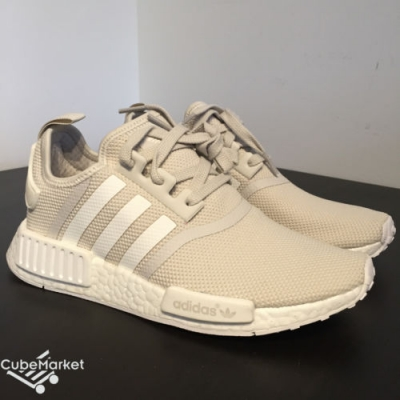

adidas NMD
Вышедшие менее двух недель назад в дополнение к предыдущим релизам adidas
NMD runner, третий вариант расцветки кроссовок adidas Originals NMD может
стать одной из самых главных моделей следующего сезона от гиганта в индустрии
спортивной одежды. Наиболее очевидным отличием является верх Primeknit, который
выполнен полностью в белом цвете с такого же цвета брендовым знаком в виде трех
полосок, шнурками и пяткой. Нижняя часть подошвы тоже белого цвета и изготовлена
из резины, а амортизирующая часть подошвы Boost кроме участков стандартного белого
оттенка имеет еще акценты красного и синего цветов. Ожидается, что этот белый вариант
кроссовок будет таким же популярным, когда появится в продаже в следующем году, как
и первый релиз модели NMD, которая была распродана в течение первых часов после
появления на прилавках.